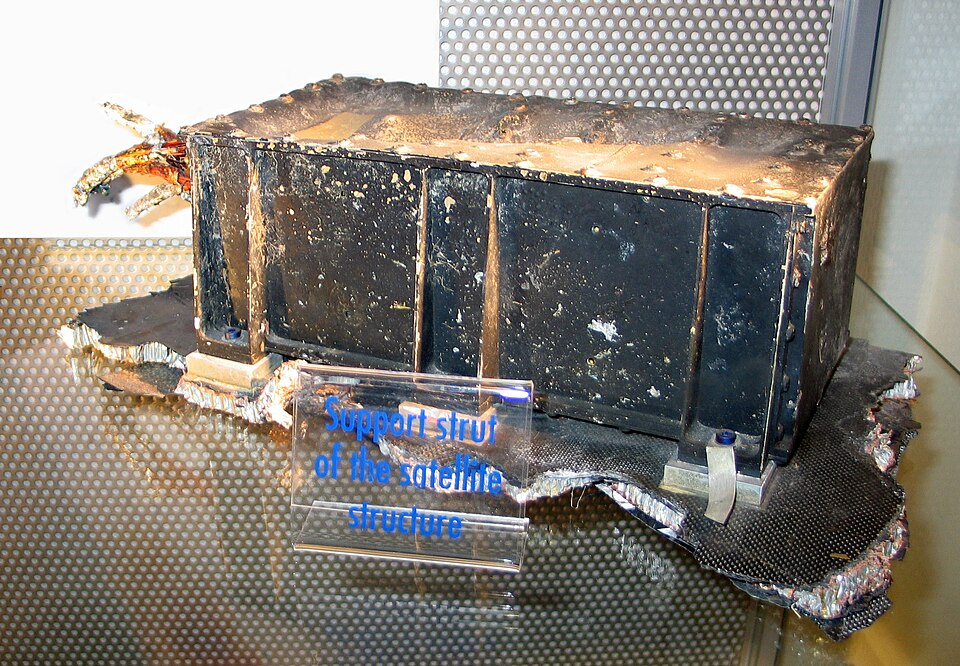

Математическое моделирование как источник вычислительных задач
Инженерная задача завершается числом: температура лопатки, прогиб балки, подъёмная сила. Прямой эксперимент невозможен, опасен или дорог. Выход — заменить объект математической моделью и получить число из неё.
математическая модель. Описание объекта на языке математики — уравнения, неравенства, функционалы — вместе с входными данными, искомыми величинами и допущениями, при которых описание адекватно объекту.
Ключевое слово определения — «допущения»: модель описывает не объект, а его упрощённую версию. Далее — пример полной цепочки от явления к числу.
§1.0 · Введение
Пример: остывание стержня
От явления к числу
явление: стержень, один конец в печи; нужна температура другого конца через час;
модель: \(u_t = a\,u_{xx}\), температура задана слева, теплоизоляция справа; \(a\) из справочника; боковой теплообмен отброшен — упрощение;
метод: сетка по \(x\) и \(t\), разности вместо производных — на каждом шаге СЛАУ;
программа: прогонка в double;
анализ: сгустить сетку, сравнить с термопарой.
Число получено не из явления непосредственно, а из цепочки замен: объект → модель → сетка → программа. В каждом звене возникает собственный источник ошибки.
§1.0 · Введение
Звенья вычислительного эксперимента и источники ошибки
1 · Явление
Физическая постановка
чем пренебрегаем; измеренные входы → ошибки данных
2 · Модель
Уравнения и условия
упрощения-допущения; их цена — ошибка модели, видна только при валидации
3 · Метод
Дискретизация
сетка, сумма, \(N\) итераций вместо предела → ошибка метода
4 · Программа
Конечная арифметика
операции в double → ошибки округления
5 · Число
Верификация и валидация
правильно ли решили и те ли уравнения; расхождение → назад к модели
Предмет численных методов — звенья 3 и 4 и оценка того, насколько полученное число отличается от точного решения модели. Начнём со звена 4: свойства машинной арифметики.
§1.1 · Задача вычислительной математики
Замена бесконечного процесса конечным
Интеграл, корень, решение системы — почти ничего из этого не имеет замкнутого ответа либо требует бесконечного процесса. Компьютер выполняет только конечные последовательности арифметических операций, поэтому бесконечный процесс приходится обрывать.
Пять типичных примеров
\(\ln(1+x)\): вместо бесконечного ряда — отрезок длины \(N\);
\(\int_a^b f\,dx\): вместо предела сумм — трапеции на \(N\) узлах;
\(f(x)=0\): вместо предела итераций Ньютона — остановка при \(|f(x_k)|<\varepsilon\);
\(Ax=b\): метод Гаусса — конечен сам по себе;
\(u_t + a u_x = 0\): вместо производных — разности на сетке.
§1.1 · Задача вычислительной математики
Понятие численного метода
Общее во всех пяти примерах: бесконечное заменено конечным, ответ приближённый, и момент обрыва выбирает вычислитель.
численный метод. Пусть задача записана как операторное уравнение \(Au = F\): \(A\colon U \to V\) — оператор, \(F \in V\) — данные, \(u \in U\) — решение. Численный метод — алгоритм, ставящий в соответствие данным \(F\) приближённое решение \(\tilde u \in U\) за конечное число арифметических операций и обращений к стандартным функциям.
Приближённость решения — принципиальное свойство численного метода, а не дефект. Три исторических примера недооценки этого свойства.
§1.1 · Зачем это важно
Три катастрофы, вызванные ошибками машинной арифметики
25.02.1991
ЗРК Patriot
Время в десятых долях секунды умножалось на 24-битное приближение 0,1. За 100 часов накопилась ошибка 0,34 с: Scud не перехвачен, 28 погибших.

04.06.1996
Ariane 5
64-битное число с плавающей точкой преобразовали в 16-битное целое: переполнение. Самоуничтожение на 37-й секунде, $370 млн.
1982–1983
Vancouver Stock Exchange
Индекс после каждой сделки усекался, а не округлялся. За 22 месяца потеряно 574 пункта из 1000.
Формулы были верны, программы выполняли ровно то, что написано. Проследим механизм каждой из трёх ошибок: где возникла, как выросла, к чему привела.
Фото: U.S. Air Force, public domain · фрагмент Ariane 501 — Wikimedia Commons, public domain · здание VSE — mafue, CC BY-SA 3.0
§1.1 · Механизм трёх катастроф
Где возникла ошибка, как выросла, к чему привела
Patriot
\(0{,}1 = 0{,}000110011\ldots_2\) — бесконечная дробь; в 24 битах обрезана, ошибка \(9{,}5\cdot10^{-8}\) на каждый такт (0,1 с)
за 100 ч — \(3{,}6\cdot10^{6}\) тактов, отставание \(0{,}34\) с; Scud за это время пролетает 570 м — окно поиска пусто. Накопление
Ariane 5
скорость хранилась как double, передавалась как 16-битное целое (не больше 32 767); у Ariane 5 скорость выше, чем у Ariane 4
переполнение → исключение → оба навигационных модуля остановлены → диагностика прочитана как данные о курсе → самоуничтожение. Переполнение
Ванкувер
индекс после каждой сделки усекался до 0,001, а не округлялся: ошибка всегда одного знака, \(\approx 0{,}0005\) на пересчёт
тысячи сделок в день — около пункта в день; за 22 месяца 574 пункта: \(524{,}8\) вместо \(1098{,}9\). Смещение
Три разных механизма — накопление, переполнение, смещение — и один общий корень: конечность машинных чисел. Расположим ошибки по источникам.
§1.2 · Источники ошибок
Три независимых источника ошибки
1
Ошибки в данных
Измерения, константы, прошлые расчёты. От алгоритма не зависят, но им усиливаются.
▼
2
Ошибки метода (усечения)
Обрыв ряда, разность вместо производной, выход из итераций — были бы и при идеальной арифметике.
▼
3
Ошибки округления — предмет §1
Конечный набор битов, каждая операция округляется заново. Все три катастрофы — отсюда.
Для всех трёх источников нужна единая количественная мера. Что означает запись «ошибка \(10^{-6}\)»?
§1.2 · Ошибки
Пример: две меры одной ошибки
Стол. Длина \(1\) м, ошибка \(\pm 1\) мм.
Луна. Расстояние \(384\,400\) км, ошибка \(\pm 1\) км.
Если измерять ошибку в единицах длины, стол измерен точнее в миллион раз: 1 мм против 1 км. Если измерять её в долях самой величины — наоборот: у стола \(10^{-3}\), у Луны \(2{,}6\cdot 10^{-6}\), Луна измерена точнее на три порядка.
Ошибка одна, а способов измерить её два, и они приводят к противоположным выводам. Определим обе меры формально.
§1.2 · Ошибки
Абсолютная и относительная ошибка
ошибка приближения. Пусть \(\tilde a\) — приближение точного \(a\in\mathbb{R}\). Тогда
\[ \Delta = |\tilde a - a|, \qquad \delta = \frac{|\tilde a - a|}{|a|}\ \ (a\neq 0) \tag{1.1, 1.2} \]
— абсолютная и относительная ошибка.
\(\Delta\) измеряет ошибку в единицах величины — метрах, градусах, рублях — и имеет её размерность. \(\delta\) — та же ошибка в долях самой величины, безразмерна; пересчёт всегда возможен: \(\delta = \Delta/|a|\).
Абсолютная ошибка отвечает за верные знаки после запятой, относительная — за верные значащие цифры. Сначала уточним, что значит «верная цифра».
§1.2 · Верные цифры
Что означает «верны три цифры»
Цифра верна, если ошибка не превосходит половины единицы её разряда: тогда правильно округлённое точное значение даёт ту же цифру. Пример: \(\pi = 3{,}14159\ldots\)
\(3{,}14\)
\(0{,}0016 \le 0{,}005\)
половина единицы сотых — \(0{,}005\); верны три цифры
\(3{,}15\)
\(0{,}0084 > 0{,}005\)
третья цифра неверна; верны две
\(3{,}1416\)
\(0{,}0000073 \le 0{,}00005\)
половина единицы десятитысячных; верны пять цифр
Связь с \(\delta\). \(n\) верных цифр \(\Rightarrow \delta \le 5\cdot 10^{-n}\); обратно, \(\delta \le 5\cdot 10^{-(n+1)} \Rightarrow n\) верных цифр. Коротко: число верных цифр \(\approx -\lg\delta\): \(\delta = 10^{-3}\) — три цифры, \(10^{-6}\) — шесть, \(10^{-16}\) — шестнадцать.
Положение запятой не участвует: \(314 \pm 0{,}5\) и \(3{,}14 \pm 0{,}005\) — по три верные цифры. Теперь видно, за что отвечает каждая из двух мер.
§1.2 · Ошибки
Абсолютная и относительная ошибка: области применения
\(\Delta\): верные знаки после запятой
\(3{,}14 \pm 0{,}005\) и \(314 \pm 0{,}5\) — разные \(\Delta\): верны сотые или только единицы;
существенна там, где важна сама величина ошибки: учёт, допуск \(\pm 0{,}1\) мм при обработке, наведение;
при сложении и вычитании складываются именно \(\Delta\).
\(\delta\): верные значащие цифры
\(3{,}14 \pm 0{,}005\) и \(314 \pm 0{,}5\) — одна и та же \(\delta \approx 1{,}6\cdot 10^{-3}\): три верные цифры;
качество измерения независимо от масштаба: стол 3 цифры, Луна 5–6;
при умножении и делении складываются именно \(\delta\).
Машина хранит 16 значащих цифр, а не 16 знаков после запятой: \(6{,}02\cdot 10^{23}\) и \(0{,}001\) имеют одну и ту же \(\delta \approx 10^{-16}\) при \(\Delta\), различающихся на 26 порядков. Естественная мера точности машинной арифметики — \(\delta.\)
Существенно различаются они, когда одна ошибка мала, а другая велика: при вычитании близких чисел \(\Delta\) мала, а \(\delta\) велика (§1.7). Но как измерить ошибку, если точный ответ неизвестен?
§1.2 · Оценка ошибки на практике
Как оценить ошибку, если точный ответ неизвестен
Определение 3 требует знать \(a\); в реальной задаче \(a\) неизвестно. Ошибку нельзя вычислить по определению, но можно оценить — четыре способа.
1 · Теорема
Априорная граница
через известные величины: (1.10) для суммы — через \(u\), \(n\), \(\sum|x_k|\); гарантирована, часто завышена
2 · Два расчёта
Правило Рунге
с шагом \(h\) и \(h/2\): ошибка \(\approx |\tilde u_{h/2} - \tilde u_h|/(2^p - 1)\); для округления — пересчёт в другом формате
измерить ошибку по определению, сверить с теорией, затем применять к реальной задаче — так устроена лабораторная
Ошибка определяется через точное значение, а оценивается без него. Теперь — к третьему источнику: с какой \(\delta\) машина хранит числа?
§1.3 · Множество ℱ
Числа с плавающей точкой
Вещественное число хранится в нормализованной форме — двоичный аналог экспоненциальной записи:
\[ x = (-1)^s \cdot (1.b_1 b_2 \ldots b_{p-1})_2 \cdot 2^{e}, \qquad e_{\min} \le e \le e_{\max}. \tag{1.3} \]
множество чисел с плавающей точкой. \(\mathbb{F} \subset \mathbb{R}\) — конечное множество: нуль, все числа вида (1.3) (нормальные) и субнормальные \((0.b_1\ldots b_{p-1})_2\cdot 2^{e_{\min}}\). Формат кодирует также \(\pm\infty\) и NaN, которые числами не являются.
Конечно — потому что битов фиксированное число: \(1 + 11 + 52 = 64\), а разных комбинаций 64 битов не больше \(2^{64}\). Вещественных чисел бесконечно много, представимых — не больше \(2^{64}\).
В формуле (1.3) три части: знак \(s\), мантисса и порядок \(e\). Рассмотрим на конкретном числе, что хранит каждая из них.
§1.3 · Как хранится число
Знак, порядок и мантисса
В записи \(6{,}02\cdot 10^{23}\) значащие цифры и положение запятой хранятся отдельно. Машинное представление устроено так же, но по основанию 2. Пример: \(6{,}25\):
\(s = 0\) — плюс, \(s = 1\) — минус: множитель \((-1)^s\) в (1.3). Один бит, отдельно от цифр
порядок \(e\)
где стоит точка
\(e = 2\): сдвиг точки на два разряда — это масштаб числа
мантисса
значащие цифры
\(1{,}1001_2\). Точку сдвигают так, чтобы перед ней стояла одна ненулевая цифра — в двоичной системе это всегда 1, поэтому её не хранят: в память идут только \(1001\). Это точность
Мантисса всегда содержит ровно \(p\) значащих двоичных цифр независимо от величины числа. Отсюда следует основное свойство распределения машинных чисел.
§1.3 · Почему сгущение у нуля
Модельный формат с \(p = 4\)
Мантисса из четырёх двоичных цифр пробегает \(1{,}000_2 \ldots 1{,}111_2\) — ровно восемь значений, и так при каждом порядке \(e\):
\(e = -1\)
\(0{,}5 \ldots 0{,}9375\)
8 чисел, шаг \(1/16\)
\(e = 0\)
\(1 \ldots 1{,}875\)
8 чисел, шаг \(1/8\)
\(e = 1\)
\(2 \ldots 3{,}75\)
8 чисел, шаг \(1/4\)
\(e = 2\)
\(4 \ldots 7{,}5\)
8 чисел, шаг \(1/2\): между 4 и 8 уже нет ни \(4{,}25\), ни \(5{,}1\)
Восемь чисел на каждом полуинтервале \([2^e, 2^{e+1})\), длина которого удваивается, — значит, удваивается и шаг. Абсолютный шаг растёт с числом, относительный шаг \(\approx 2^{-(p-1)}\) постоянен. Общая картина на числовой оси.
§1.3 · Распределение ℱ на оси
Распределение \(\mathbb{F}\) на числовой оси
То же в общем виде: между соседними степенями двойки — ровно \(2^{p-1}\) чисел (в double \(2^{52}\)); при переходе через степень двойки шаг удваивается.
Абсолютный зазор растёт вместе с числом, относительный постоянен: \(\approx 2^{-(p-1)}\). Поэтому машинная арифметика контролирует именно \(\delta\). Остаётся зафиксировать \(p\) и диапазон порядка.
Ключевая константа: \(u \approx 10^{-16}\) — предел относительной точности любого расчёта в double. Как она входит в каждую операцию, описывает модель округления.
§1.5 · Модель fl(·)
Модель округления
Оператор \(\mathrm{fl}\colon \mathbb{R}\to \mathbb{F}\) — округление к ближайшему (половины — к чётному).
модель округления. Для \(x\in\mathbb{R}\) в нормализованном диапазоне \(2^{e_{\min}}\le|x|<2^{e_{\max}+1}\), а также для \(a,b\in\mathbb{F}\), \(\circ\in\{+,-,\times,/\}\) с результатом в том же диапазоне (арифметика IEEE 754):
\[ \mathrm{fl}(x) = x\,(1+\varepsilon),\qquad \mathrm{fl}(a\circ b) = (a\circ b)\,(1+\varepsilon'),\qquad |\varepsilon|,|\varepsilon'|\le u = 2^{-p}. \tag{1.4, 1.5} \]
Это основа всего анализа ошибок округления: каждая операция вносит относительную ошибку не более \(u\). IEEE 754 гарантирует (1.5) для \(+,-,\times,/,\sqrt{\ }\). С \(u\) тесно связана другая константа, которую часто с ней путают.
§1.6 · Машинное ε
Машинное \(\varepsilon\): шаг сетки \(\mathbb{F}\) у единицы
Вернёмся к сетке \(\mathbb{F}\). Между 1 и 2 лежат \(2^{p-1}\) представимых чисел с шагом \(2^{-(p-1)}\); для double это \(2^{-52} \approx 2{,}2\cdot 10^{-16}\). У этого шага есть собственное имя.
машинное \(\varepsilon\). Расстояние от единицы до следующего представимого числа:
Опыт.1.0 + 1e-16 == 1.0 даёт true, а 1.0 + 1.2e-16 == 1.0 — false. Слагаемое, не превосходящее половины шага, округляется к единице; слагаемое больше половины шага — к следующему узлу сетки.
Граница в этом опыте — не шаг, а его половина: округление к ближайшему отклоняется от аргумента не более чем на полшага. Эта половина шага имеет собственное название.
§1.6 · Единица округления
Единица округления \(u\)
Точное \(x\) лежит между двумя соседними узлами сетки. Округление к ближайшему выбирает ближний узел, поэтому промах не превышает половины шага; хуже всего точке ровно посередине. Для чисел из \([1,2)\) это \(\varepsilon_{\text{м}}/2\); для любого другого числа шаг и само число растут пропорционально, и относительный промах остаётся тем же.
единица округления. Верхняя граница относительной ошибки представления числа и одной арифметической операции:
\[ u = \tfrac12\,\varepsilon_{\text{м}} = 2^{-p} \approx 1{,}1\cdot 10^{-16}. \]
Именно \(u\) стоит в модели округления (1.4)–(1.5) и во всех оценках ошибок далее.
Не путать. \(\varepsilon_{\text{м}} = 2u\). В NumPy np.finfo(np.float64).eps — это машинное \(\varepsilon\), а не \(u\); для оценок ошибок берут eps/2.
\(\varepsilon_{\text{м}}\) называют ещё машинной точностью. Слово «точность» здесь — про относительное разрешение, а не про то, какие маленькие числа умеет хранить машина. Это другой вопрос, и у него другой ответ.
§1.6 · Машинный нуль
Машинный нуль — не машинное \(\varepsilon\)
машинный нуль и машинная бесконечность. Наименьшее положительное и наибольшее число \(\mathbb{F}\):
Граница нормального диапазона \(2^{e_{\min}} \approx 2{,}2\cdot 10^{-308}\); ниже неё числа субнормальны, и гарантия теоремы 1 не действует. Ниже \(x_{\min}/2\) — исчезновение порядка, результат \(0\); выше \(x_{\max}\) — переполнение, результат \(\pm\infty\).
Машинное \(\varepsilon_{\text{м}} \approx 2\cdot 10^{-16}\) наименьшее \(\eta\), отличимое от единицы: \(1+\eta\ne 1\). Задаётся длиной мантиссы \(p\): относительное разрешение — шаг сетки в долях числа. За границей: слагаемое поглощается соседом.
Машинный нуль \(x_{\min} \approx 5\cdot 10^{-324}\) наименьшее \(\eta>0\), отличимое от нуля: \(\eta\ne 0\). Задаётся границей порядка \(e_{\min}\): абсолютный диапазон — где сетка обрывается. За границей: число само становится нулём.
Опыт.1e-300 != 0.0 — True; 1.0 + 1e-300 == 1.0 — тоже True; 1e-300 * 1e-300 — 0.0. Число \(10^{-300}\) хранится с 16 верными цифрами, но пропадает рядом с единицей; само по себе оно пропадает лишь ниже \(10^{-308}\).
Итак, одна операция вносит относительную ошибку не более \(u \approx 10^{-16}\), а числа до \(10^{-308}\) хранятся полноценно. Как тогда возможна потеря всех верных цифр? Достаточно одной операции — вычитания близких чисел.
§1.7 · Потеря значимости
Потеря значимости при вычитании близких чисел
Шаг 1. Аргументы уже хранятся с ошибкой: по (1.4) \(\tilde a = a(1+\alpha)\), \(\tilde b = b(1+\beta)\), \(|\alpha|,|\beta|\le u\). Само вычитание считаем точным (при \(a \approx b\) оно и правда точное: разность представима).
Шаг 2. Раскрываем скобки: \(\tilde a - \tilde b = a + a\alpha - b - b\beta\), то есть
\[ \tilde a - \tilde b = (a-b) + (a\alpha - b\beta). \tag{1.8} \]
Шаг 3. Абсолютная ошибка разности — второе слагаемое; оценим его: \(|a\alpha - b\beta| \le |a|\,|\alpha| + |b|\,|\beta| \le (|a|+|b|)\,u\). Она не больше, чем у самих аргументов.
Шаг 4. Относительная ошибка — делим на \(|a-b|\):
\[ \frac{|(\tilde a - \tilde b) - (a - b)|}{|a-b|} \;\le\; \underbrace{\frac{|a|+|b|}{|a-b|}}_{\kappa_-(a,b)}\cdot u. \tag{1.9} \]
Числитель остался порядка \(u\), а знаменатель \(|a-b|\) при \(a\to b\) стремится к нулю. Вычитание не создаёт новой ошибки, а усиливает уже имеющуюся в \(\kappa_-\) раз.
§1.7 · Потеря значимости
Оценка числа теряемых цифр
Иллюстрация
\(a = 1{,}23456789\), \(b = 1{,}23456700\) — по 9 верных цифр, ошибка каждого до \(\tfrac12\cdot 10^{-8}\). Разность \(a-b = 0{,}00000089\) с ошибкой до \(10^{-8}\): верных цифр осталось не более двух. Вычитание выполнено точно; старшие разряды сократились, значащими стали младшие разряды, содержащие ошибку данных.
Правило. Если \(|a-b| \approx 10^{-k}\max(|a|,|b|)\), то \(\kappa_- \approx 2\cdot 10^{k}\): в разности теряется около \(k\) верных значащих цифр — столько, на сколько порядков она меньше аргументов.
Поскольку причина не в арифметике, а в сокращении разрядов, изменять нужно формулу.
§1.7 · Лечение
Устранение вычитания близких чисел преобразованием формулы
Формула половинного угла, библиотечная функция expm1, теорема Виета: ни в одном преобразованном выражении нет вычитания близких чисел. Все три случая — в лабораторной работе.
Потеря значимости — результат одной операции. Другой механизм — накопление малых ошибок в длинной последовательности операций.
§1.8 · Накопление ошибок в сумме
Накопление ошибок при суммировании: оценка Уилкинсона
Каждое сложение вносит относительную ошибку не более \(u\). Сумма \(n\) чисел вычисляется циклом \(\hat S_k = \mathrm{fl}(\hat S_{k-1} + x_k)\). Какова ошибка результата?
оценка Уилкинсона. Если \((n-1)u < 1\), то для \(S = \sum_{k=1}^{n} x_k\)
При \(n = 10^{7}\) граница \(\sim 10^{-9}\) — существенно хуже машинной точности. Её улучшают компенсированное суммирование Кэхэна (1965), попарное и отсортированное суммирование — предмет лабораторной работы.
Получена оценка ошибки алгоритма. Однако неточный ответ не всегда объясняется алгоритмом: иногда сама задача не допускает более точного ответа.
§1.9 · Обусловленность
Усиление ошибки входа зависит от задачи
Вход задан с \(\delta_{\text{вх}} = 10^{-6}\) (шесть верных цифр). Три функции вычисляются точно, без округлений.
\(\sqrt{x}\), \(x = 2\)
\(\delta_{\text{вых}} \approx 5\cdot 10^{-7}\)
ошибка уменьшилась вдвое
\(e^{x}\), \(x = 100\)
\(\delta_{\text{вых}} \approx 10^{-4}\)
потеряны две цифры из шести
\(1/(1-x)\), \(x = 0{,}9999\)
\(\delta_{\text{вых}} \approx 10^{-2}\)
осталось две цифры: вблизи полюса задача усиливает возмущение
Алгоритм здесь не участвует. Различается коэффициент усиления, свойственный самой задаче: \(\tfrac12\), \(100\), \(10^{4}\). Определим его формально.
§1.9 · Определение
Число обусловленности задачи
Коэффициент усиления относительной ошибки в наихудшем направлении возмущения и в пределе малых возмущений.
число обусловленности. Для задачи \(y=f(x)\), где \(f\colon X\to Y\) — отображение нормированных пространств, \(x\ne0\), \(f(x)\ne0\):
Хорошо обусловлена — \(\kappa\) порядка единиц, плохо — \(\kappa \gg 1\). Это свойство задачи в точке: никакой алгоритм не даст точнее \(\kappa\cdot u\). Для \(Ax=b\) та же формула в худшем случае по \(b\) даёт \(\kappa(A)=\|A\|\,\|A^{-1}\|\) (§11). Для скалярной функции предел вычисляется явно.
§1.9 · Скалярный случай
Число обусловленности гладкой функции
Для дифференцируемой \(f\) при \(x\ne0\), \(f(x)\ne0\): из \(f(x+\Delta x)-f(x)=f'(x)\Delta x+o(\Delta x)\) предел в (1.11) равен
\(1/(1-x)\): \(\kappa = |x/(1-x)|\) — полюс в \(x=1\).
Вычитание близких чисел — тоже плохо обусловленная задача: \(\kappa_-\) из (1.9) — частный случай (1.11). Часть ошибки результата определяется задачей. Остальная часть вносится алгоритмом, и для неё нужна отдельная мера.
§1.10 · Устойчивость
Обратная устойчивость алгоритма
Задача \(f\colon X\to Y\) решается алгоритмом \(\tilde f\colon X\to Y\) в арифметике с единицей округления \(u\). Задача одна, алгоритмов много: формула наивная и переписанная, Гаусс с выбором главного элемента и без.
обратно устойчивый алгоритм. Алгоритм \(\tilde f\) обратно устойчив для задачи \(f\), если существует постоянная \(C\), не зависящая от \(x\) и \(u\), такая, что для каждого \(x\in X\) найдётся \(\tilde x\in X\):
Результат — точное решение для входа, возмущённого на величину порядка \(u\). Обратно устойчивы Гаусс с выбором главного элемента, QR, Холецкий, наивная сумма; формула \((-b+\sqrt{D})/2\) при \(b^2\gg 4c\) — нет. Далее — две меры ошибки одного результата.
§1.11 · Прямая и обратная ошибка
Прямая и обратная ошибка
Алгоритм вернул \(\tilde y = \tilde f(x)\) вместо точного \(y = f(x)\). Расхождение можно измерить двумя способами.
прямая и обратная ошибка.Прямая ошибка результата \(\tilde y\) — величина \(\|\tilde y - y\|/\|y\|\). Обратная ошибка — \(\eta(\tilde y) = \inf\{\|\tilde x - x\|/\|x\| \colon f(\tilde x) = \tilde y\}\): наименьшее относительное возмущение входа, для которого полученный результат является точным решением.
Прямая ошибка — то, что нас интересует; обратная — то, что умеет гарантировать алгоритм: по (1.13) у обратно устойчивого она не превосходит \(C u\). Обе ошибки — на одной схеме.
§1.11 · Прямая и обратная ошибка
Схема: точная задача и алгоритм
Верхняя стрелка — точная задача \(f\): из \(x\) в \(y\). Пунктир — алгоритм \(\tilde f\), дающий \(\tilde y\). Нижняя стрелка — та же \(f\), но от возмущённого входа \(\tilde x\): попадает ровно в \(\tilde y\). Левый отрезок \(x \to \tilde x\) — обратная ошибка, правый \(y \to \tilde y\) — прямая.
Две ошибки связаны через задачу: возмущение \(x \to \tilde x\) переходит в \(y \to \tilde y\) с коэффициентом не больше \(\kappa\). Сформулируем это как оценку.
§1.11 · Оценка прямой ошибки
Оценка прямой ошибки через обратную
Обратная ошибка: \(\tilde y = f(\tilde x)\), вход возмущён на \(\eta = \|\tilde x - x\|/\|x\|\). Число обусловленности (1.11): наибольший коэффициент усиления малого относительного возмущения входа. Подстановка одного определения в другое даёт:
оценка прямой ошибки через обратную (Trefethen–Bau, теорема 15.1; Higham, §1.6). Если задача \(f\) имеет в точке \(x\) конечное число обусловленности \(\kappa(x)\), а результат \(\tilde f(x)\) — обратную ошибку \(\eta\), то при \(\eta \to 0\)
В частности, для обратно устойчивого алгоритма прямая ошибка есть \(O(\kappa(x)\,u)\).
Оценка (1.14) — следствие двух определений; Higham называет её эмпирическим правилом (rule of thumb) вычислительной математики. Прямая ошибка разложена на множитель задачи и множитель алгоритма. Отсюда — порядок диагностики.
§1.11 · Диагностика
Диагностика: задача или алгоритм
Шаг 1
Оцените \(\kappa\) задачи в вашей точке
Скалярная функция — \(|xf'/f|\); СЛАУ — cond(A); собственные задачи — разброс спектра.
▼
2A
\(\kappa\) велико — меняйте постановку
Замена алгоритма не поможет: другой базис, регуляризация, другие переменные.
▼
2B
\(\kappa\) мало — причина в алгоритме
Убрать катастрофическое вычитание, QR вместо нормальных уравнений, компенсированное суммирование.
Это разделение — основа всего курса: каждый метод оценивается по двум характеристикам — ошибке метода и устойчивости.
§1.12 · Итоги
Итоги занятия 1 · часть 1
Число получается из цепочки модель → дискретизация → алгоритм → программа; в каждом звене свой источник ошибки. ЧМ — два средних звена.
\(\mathbb{F}\) конечно и неравномерно; точность задаётся \(u = 2^{-p} \approx 10^{-16}\) для double.
Модель округления: \(\mathrm{fl}(a\circ b) = (a\circ b)(1+\varepsilon)\), \(|\varepsilon|\le u\); \(\varepsilon_{\text{м}} = 2u\). Машинное \(\varepsilon\) (\(10^{-16}\), мантисса) — не машинный нуль (\(10^{-308}\), порядок).
Опасна не операция, а вычитание близких чисел: ошибка растёт в \((|a|+|b|)/|a-b|\) раз. Лечится переписыванием формулы.
Обусловленность \(\kappa\) — свойство задачи в точке; для скалярной функции \(\kappa = |xf'/f|\).
Устойчивость — свойство алгоритма; основное требование — обратная устойчивость.
Оценка (1.14): прямая ошибка \(\lesssim \kappa \cdot\) обратная. Велико \(\kappa\) — менять постановку; велика обратная ошибка — переписать алгоритм.
Практика и источники
Лабораторная работа и литература
▶ Лабораторная работа
Четыре алгоритма суммирования на C++ в браузере, наклон графика ошибки в логарифмических осях, затем устранение потери значимости: теорема Виета, \(1-\cos x\), \(\sqrt{a^2+b^2}\).